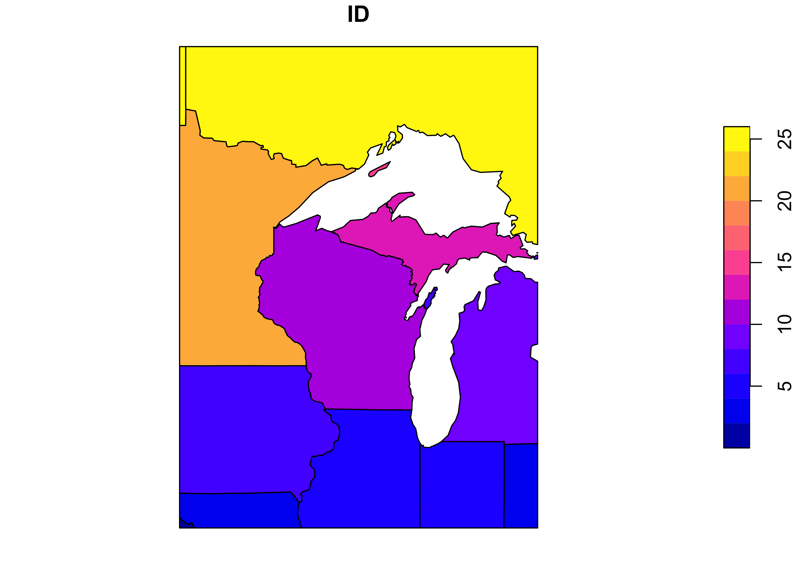
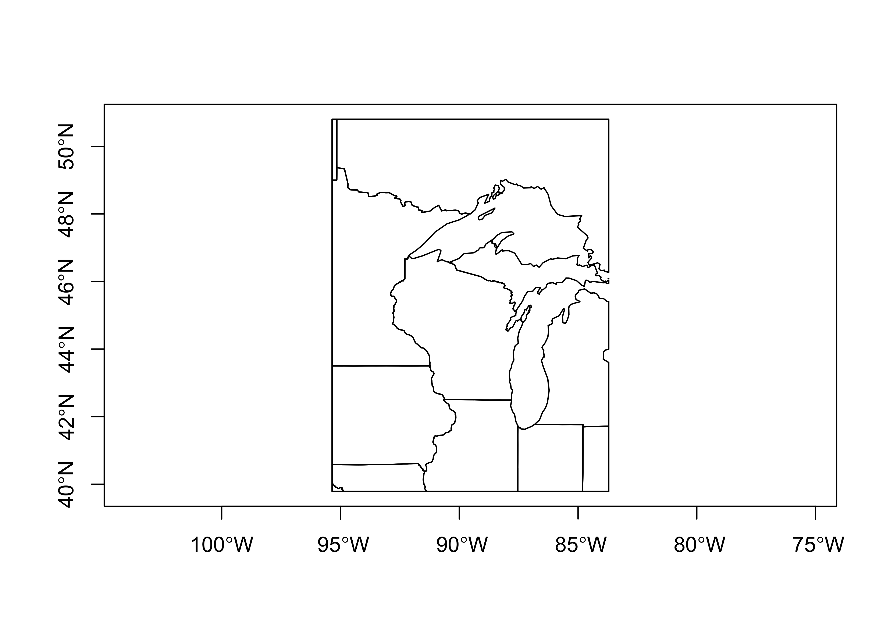
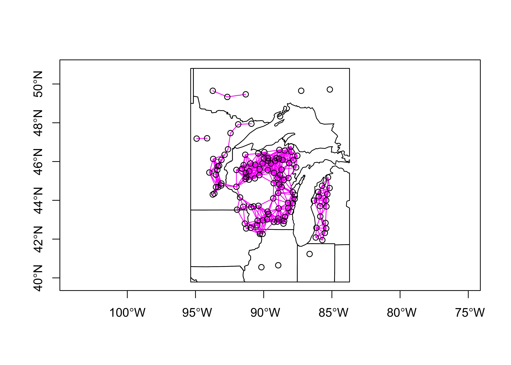
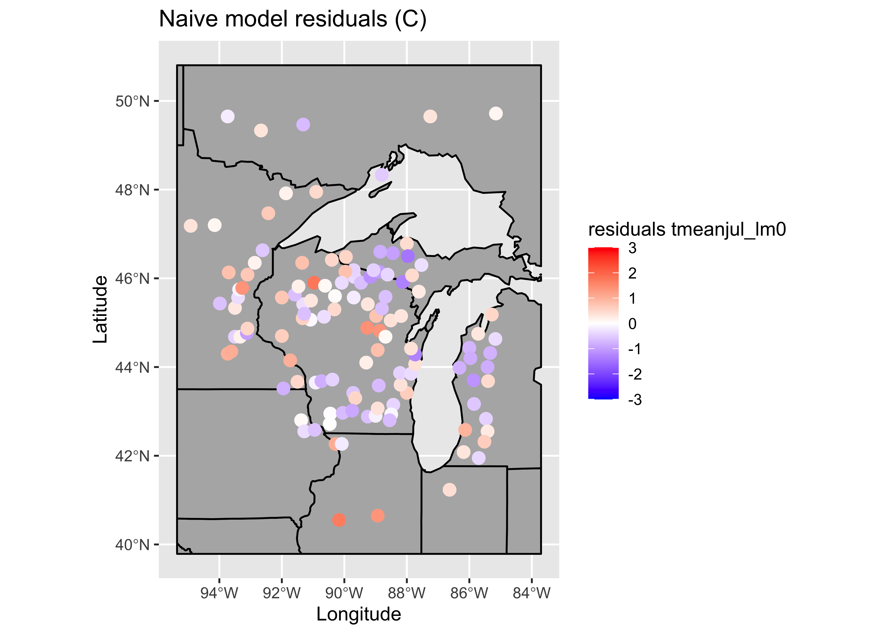
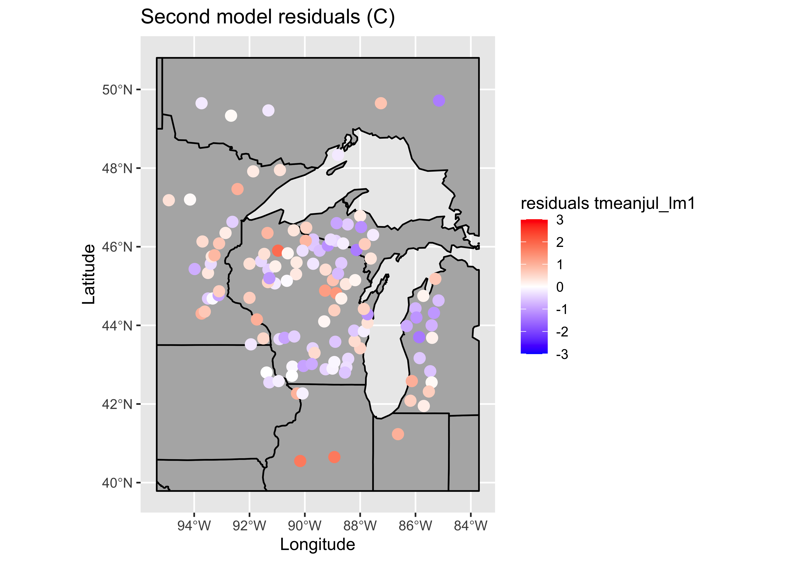
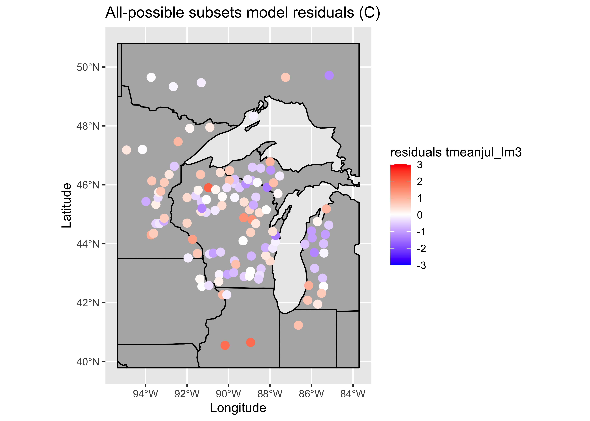
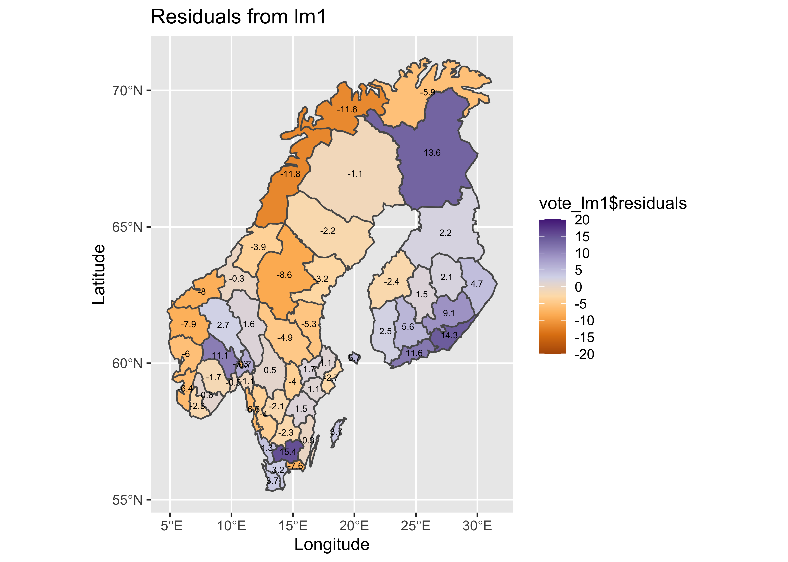

More regression analysis
- 1 Introduction
- 2 Fitting a multiple regression equation
- 3 Regression Assumptions
- 4 Testing for assumption violations with diagnostic analyses
- 4.1 Example 1 – no major issues
- 4.2 Example 2 – non-significant predictor
- 4.3 Example 3 – outliers present
- 4.4 Example 4 – outliers and an additional predictor
- 4.5 Example 5 – heteroscedasticity (non-normality) of the residual
- 4.6 Example 6 – nonlinear relationships
- 4.7 Example 7 – transformation
- 4.8 Example 8 – fitting a nonlinear (quadratic) function
- 4.9 Example 9 – model inadequacy due to a missing predictor
- 5 An example of iterative diagnostic analysis
- 6 Another example – dummy-variable regression
- 7 Readings
NOTE: This page has been revised for Spring 2020, but may undergo further edits.
1 Introduction
Multiple regression is (conceptually) a simple extension of bivariate regression, in which the influence of more than one predictor variable on the response can be estimated. For the case with two predictor variables, the analysis can be thought of as involving the fitting of a plane (as opposed to a line in the bivariate regression case), and the equations for the OLS estimates of the regression equations are only a little more complicated algebraically. For three or more predictors, the algebra is also quite simple, but requires the use of matrix algebra.
A couple of illustrations jointly describe the idea of fitting a plane:
{kind=link}
{kind=link}
2 Fitting a multiple regression equation
The mathematics behind multiple regression analysis is more complicated than that for bivariate regression, but can be elegantly presented using matrix algebra
The following example provide a short illustration of the use of matrix algebra to obtain the regression coefficients.
The example data set for illustrating the use of regression diagnostics [regrex3.csv] is used here, in particular, the multiple regression using x1 and x2 as predictors for the response variable y5
First, take a look at the different variables in the example data set.
## Obs.no. x1 x2 y1 y2 y3
## Min. : 1.00 Min. : 0.2076 Min. :-9.794 Min. :-7.580 Min. :-6.739 Min. :-7.735
## 1st Qu.: 25.75 1st Qu.: 7.6887 1st Qu.:16.850 1st Qu.: 2.104 1st Qu.: 2.580 1st Qu.: 1.761
## Median : 50.50 Median :15.1511 Median :27.546 Median :10.098 Median :10.002 Median :10.487
## Mean : 50.50 Mean :14.0750 Mean :28.468 Mean : 9.513 Mean : 9.513 Mean : 9.473
## 3rd Qu.: 75.25 3rd Qu.:20.4470 3rd Qu.:40.138 3rd Qu.:17.263 3rd Qu.:16.819 3rd Qu.:17.126
## Max. :100.00 Max. :24.9525 Max. :63.861 Max. :24.217 Max. :24.459 Max. :24.168
## y4 y5
## Min. :-2.097 Min. : -8.455
## 1st Qu.: 2.256 1st Qu.: 45.818
## Median : 9.483 Median : 76.446
## Mean : 9.716 Mean : 73.884
## 3rd Qu.:16.588 3rd Qu.:102.690
## Max. :24.217 Max. :150.621## y5 x1 x2
## [1,] 99.4237 17.6403 39.2009
## [2,] 47.8476 9.3786 20.2735
## [3,] 89.1535 20.0313 33.7959
## [4,] 143.1316 23.4556 48.6115
## [5,] 124.6998 24.4938 47.3454
## [6,] 51.5796 8.8475 18.0954Create an n row by 1 column matrix (i.e. a column vector) called y:
## [1] 100 1## [,1]
## [1,] 99.4237
## [2,] 47.8476
## [3,] 89.1535
## [4,] 143.1316
## [5,] 124.6998
## [6,] 51.5796Create an n row by p+1 matrix, X, with 1’s in the first column, and x1 and x2 in the second and third columns:
## [1] 100 3## [,1] [,2] [,3]
## [1,] 1 17.6403 39.2009
## [2,] 1 9.3786 20.2735
## [3,] 1 20.0313 33.7959
## [4,] 1 23.4556 48.6115
## [5,] 1 24.4938 47.3454
## [6,] 1 8.8475 18.0954Now use matrix algebra to calculate b, the p+1 row by 1 column matrix (e.g. a column vector) of regression coefficients, b0, b1 and b2: b = (X’X)-1X’y.
## [,1]
## [1,] 3.4159624
## [2,] 0.9241464
## [3,] 2.0184663## [1] 3 1The matrix functions and operators used in the above expression include t(), which transposes a matrix, %*%, which is the matrix multiplication operator, and solve(), which inverts a matrix.
Compare these values with those obtained using the lm() function:
##
## Call:
## lm(formula = y5 ~ x1 + x2, data = regrex3)
##
## Coefficients:
## (Intercept) x1 x2
## 3.4160 0.9241 2.0185Now calculate the fitted values (y-hats), i.e. \(\mathbf{\widehat{y}}\) = Xb:
and compare these with those obtained using the lm() function
## [,1] [,2]
## 1 98.84388 98.84388
## 2 53.00454 53.00454
## 3 90.14370 90.14370
## 4 123.21305 123.21305
## 5 121.61691 121.61691
## 6 48.11730 48.11730In addition to being able to efficiently represent the derivation of terms and thier properties in regression analysis in general, matrix algebra also provides a an efficient way of doing the actual calculations.
3 Regression Assumptions
The basic regression model (as well as more complicated ones) have certain underlying assumptions, violations of which have an impact on the optimality of the fitted model, i.e., the extent to which the model and its parameters represent the best model that can be fit, that is, the one that performs the best in the tasks of representing the relationship between the response variable and the predictor variable(s), or predicting future values of the response variable given new values of the predictor variables.
The main assumptions that underlie regression analysis:
- the prediction errors or residuals are assumed to be independent, identically normally distributed random variables, with a mean of 0 and a standard deviation of s,
- the X’s (predictor or independent variables) are known without error,
- the X’s are not correlated.
- the correct model has been specified (i.e. the right predictors have been included in the model.
If the assumptions are not violated, then the Gauss-Markov theorem indicates that the usual OLS estimates are optimal in the sense of being unbiased and having minimum variance. If one or more of the assumptions are violated, then estimated regression coefficients may be biased (i.e. they may be systematically in error), and not minimum variance (i.e. there may be more uncertainty in the coefficients than is apparent from the results).
3.1 Consequences of assumption violations
If the assumptions are violated, then there may be two consequences–the estimated coefficients may be biased (i.e. systematically wrong), and they may longer have minimum variance (i.e. their uncertainty increases).
- the notion of variability of the regression coefficients
- illustrations using repeated simulations of data sets with built-in assumption violations [examples], [solutions]
![[examples]](https://pjbartlein.github.io/GeogDataAnalysis/images/violate1.gif){kind=link}
![[solutions]](https://pjbartlein.github.io/GeogDataAnalysis/images/violate2.gif){kind=link}
4 Testing for assumption violations with diagnostic analyses
There are several ways to test whether the assumptions that underlie regression analysis have been violated. As might be expected, these include analytical methods, in which the values of particular test statistics are computed and compared with appropriate reference distributions, and graphical methods, which are often easier to implement (and just as informative).
A good way to understand the way in which the various statistics and diagnostic plots allow one to examine the reqression equation, its goodness-of-fit, and a to assess the possibility of assumption violations is to design-in various assumption violations and issues, and compare the results to a regression analysis without issues.
An example data set for illustrating the use of regression diagnostics [regrex3.csv] First, take a look at the different variables in the example data set.
## Obs.no. x1 x2 y1 y2 y3
## Min. : 1.00 Min. : 0.2076 Min. :-9.794 Min. :-7.580 Min. :-6.739 Min. :-7.735
## 1st Qu.: 25.75 1st Qu.: 7.6887 1st Qu.:16.850 1st Qu.: 2.104 1st Qu.: 2.580 1st Qu.: 1.761
## Median : 50.50 Median :15.1511 Median :27.546 Median :10.098 Median :10.002 Median :10.487
## Mean : 50.50 Mean :14.0750 Mean :28.468 Mean : 9.513 Mean : 9.513 Mean : 9.473
## 3rd Qu.: 75.25 3rd Qu.:20.4470 3rd Qu.:40.138 3rd Qu.:17.263 3rd Qu.:16.819 3rd Qu.:17.126
## Max. :100.00 Max. :24.9525 Max. :63.861 Max. :24.217 Max. :24.459 Max. :24.168
## y4 y5
## Min. :-2.097 Min. : -8.455
## 1st Qu.: 2.256 1st Qu.: 45.818
## Median : 9.483 Median : 76.446
## Mean : 9.716 Mean : 73.884
## 3rd Qu.:16.588 3rd Qu.:102.690
## Max. :24.217 Max. :150.621
There are two potential predictor variables x1 and x2, and five potential responses, each with particular issues or assumption violations. The idea here is to examine the summary output and diagnostic plots for each regression, and compare them to a case (the first regression) where there are no major issues.
4.1 Example 1 – no major issues
Here’s an inital regression, that shows no major issues:
##
## Call:
## lm(formula = y1 ~ x1, data = regrex3)
##
## Residuals:
## Min 1Q Median 3Q Max
## -2.1266 -0.5178 -0.1048 0.5725 2.4955
##
## Coefficients:
## Estimate Std. Error t value Pr(>|t|)
## (Intercept) -7.56853 0.19743 -38.33 <2e-16 ***
## x1 1.21362 0.01249 97.17 <2e-16 ***
## ---
## Signif. codes: 0 '***' 0.001 '**' 0.01 '*' 0.05 '.' 0.1 ' ' 1
##
## Residual standard error: 0.8986 on 98 degrees of freedom
## Multiple R-squared: 0.9897, Adjusted R-squared: 0.9896
## F-statistic: 9441 on 1 and 98 DF, p-value: < 2.2e-16
4.2 Example 2 – non-significant predictor
One of the most common issues in regression equations is the inclusion of a predictor that is not significant, in the sense that the t-test of the null hypothesis that the slope parameter for that predictor is zero is not significant (i.e. there is no support for rejecting that hypthesis). Here’s a example, where x2 is not significant:
##
## Call:
## lm(formula = y1 ~ x1 + x2, data = regrex3)
##
## Residuals:
## Min 1Q Median 3Q Max
## -2.1397 -0.5306 -0.1069 0.5713 2.4898
##
## Coefficients:
## Estimate Std. Error t value Pr(>|t|)
## (Intercept) -7.573018 0.200055 -37.855 <2e-16 ***
## x1 1.209268 0.027783 43.526 <2e-16 ***
## x2 0.002309 0.013152 0.176 0.861
## ---
## Signif. codes: 0 '***' 0.001 '**' 0.01 '*' 0.05 '.' 0.1 ' ' 1
##
## Residual standard error: 0.9031 on 97 degrees of freedom
## Multiple R-squared: 0.9897, Adjusted R-squared: 0.9895
## F-statistic: 4674 on 2 and 97 DF, p-value: < 2.2e-16
4.3 Example 3 – outliers present
Outliers frequently arise, from mechanical (coding or recording), sampling (i.e. selection of the cases or locations), or from the simple inclusion of data points that are “outside” of the domain of interest. The third example shows how the outliers can be identified in the diagnostic plots. Cases 79 and 49 standout.
##
## Call:
## lm(formula = y2 ~ x1, data = regrex3)
##
## Residuals:
## Min 1Q Median 3Q Max
## -2.4172 -0.9379 -0.2050 0.5098 6.1841
##
## Coefficients:
## Estimate Std. Error t value Pr(>|t|)
## (Intercept) -7.45078 0.28177 -26.44 <2e-16 ***
## x1 1.20525 0.01783 67.61 <2e-16 ***
## ---
## Signif. codes: 0 '***' 0.001 '**' 0.01 '*' 0.05 '.' 0.1 ' ' 1
##
## Residual standard error: 1.282 on 98 degrees of freedom
## Multiple R-squared: 0.979, Adjusted R-squared: 0.9788
## F-statistic: 4572 on 1 and 98 DF, p-value: < 2.2e-16
4.4 Example 4 – outliers and an additional predictor
Sometimes the existence of outliers can be traced to the omission of a potentially important predictor. In this case, the inclusion of x2 does not eliminate the outliers, and as before, the slope coefficient of x2 is not significant.
##
## Call:
## lm(formula = y2 ~ x1 + x2, data = regrex3)
##
## Residuals:
## Min 1Q Median 3Q Max
## -2.4508 -0.8600 -0.2018 0.4924 6.1845
##
## Coefficients:
## Estimate Std. Error t value Pr(>|t|)
## (Intercept) -7.463675 0.285371 -26.154 <2e-16 ***
## x1 1.192732 0.039631 30.096 <2e-16 ***
## x2 0.006642 0.018760 0.354 0.724
## ---
## Signif. codes: 0 '***' 0.001 '**' 0.01 '*' 0.05 '.' 0.1 ' ' 1
##
## Residual standard error: 1.288 on 97 degrees of freedom
## Multiple R-squared: 0.979, Adjusted R-squared: 0.9786
## F-statistic: 2265 on 2 and 97 DF, p-value: < 2.2e-16
4.5 Example 5 – heteroscedasticity (non-normality) of the residual
Heteroscedasticity, or inhomogeneity of variance can arise several ways: it can be “inherited” from the response variable in cases where that variable is not completely “explained” by the predictor variable(s), and it can also signal issues with the structure of the model. In practice, heterscedastic residuals increase the variability of the regression parameter estimates, which means that we can be less confident that the “true” values of the coeffiecients have been estimated. Heteroscedasticity is signaled by the diagnostic plots, in particular “megaphone” patterns in the residual scatterplot, and “doglegs” in the normal probability plots.
##
## Call:
## lm(formula = y3 ~ x1, data = regrex3)
##
## Residuals:
## Min 1Q Median 3Q Max
## -1.8574 -0.2395 -0.0763 0.2572 2.2611
##
## Coefficients:
## Estimate Std. Error t value Pr(>|t|)
## (Intercept) -7.828320 0.135390 -57.82 <2e-16 ***
## x1 1.229227 0.008565 143.51 <2e-16 ***
## ---
## Signif. codes: 0 '***' 0.001 '**' 0.01 '*' 0.05 '.' 0.1 ' ' 1
##
## Residual standard error: 0.6162 on 98 degrees of freedom
## Multiple R-squared: 0.9953, Adjusted R-squared: 0.9952
## F-statistic: 2.06e+04 on 1 and 98 DF, p-value: < 2.2e-16
4.6 Example 6 – nonlinear relationships
Standard regrssion analyses attempt to fit linear relationships among variables, and often that’s not a reasonable assumption to make. This example illustrates how nonlinear relationships are exposed by the residual diagnostic plots (if they haven’t already been recognized), in particular by well-organized patterns in the residual scatterplot and leverage plot.
##
## Call:
## lm(formula = y4 ~ x1, data = regrex3)
##
## Residuals:
## Min 1Q Median 3Q Max
## -1.8042 -1.0126 -0.1873 0.7448 3.4770
##
## Coefficients:
## Estimate Std. Error t value Pr(>|t|)
## (Intercept) -5.70564 0.28650 -19.91 <2e-16 ***
## x1 1.09567 0.01812 60.45 <2e-16 ***
## ---
## Signif. codes: 0 '***' 0.001 '**' 0.01 '*' 0.05 '.' 0.1 ' ' 1
##
## Residual standard error: 1.304 on 98 degrees of freedom
## Multiple R-squared: 0.9739, Adjusted R-squared: 0.9736
## F-statistic: 3655 on 1 and 98 DF, p-value: < 2.2e-16
4.7 Example 7 – transformation
The usual first-order strategy for dealing with heteroscedasticity and non-linearity is to transform one or another of the variables (or both) in a bivariate regression. Here, the values of y4 are transformed buy taking their (base 10) logarithms. Because the logs of 0 and negative numbers are undefined, the values of y4 are adjusted to make them nonzero and positive. However, there are still major problems signalled by the regression diagnostic plots.
# alternative nonlinear log(y4) ~ x1
regr_logy4x1 <- lm(log10(y4-min(y4) + 0.001) ~ x1, data=regrex3)
summary(regr_logy4x1)##
## Call:
## lm(formula = log10(y4 - min(y4) + 0.001) ~ x1, data = regrex3)
##
## Residuals:
## Min 1Q Median 3Q Max
## -2.96720 -0.10553 0.07042 0.18018 0.23304
##
## Coefficients:
## Estimate Std. Error t value Pr(>|t|)
## (Intercept) -0.113399 0.076959 -1.473 0.144
## x1 0.069853 0.004869 14.348 <2e-16 ***
## ---
## Signif. codes: 0 '***' 0.001 '**' 0.01 '*' 0.05 '.' 0.1 ' ' 1
##
## Residual standard error: 0.3503 on 98 degrees of freedom
## Multiple R-squared: 0.6775, Adjusted R-squared: 0.6742
## F-statistic: 205.9 on 1 and 98 DF, p-value: < 2.2e-16
4.8 Example 8 – fitting a nonlinear (quadratic) function
An alternative approach to “linearizing” a relationship is to fit a quadratic polynomial (i.e containing the terms x and x2) to the data. The I() function indicates that the term x1^2 should be treated as is, and is not part of the “formula” in the lm() function.
# alternative nonlinear (quadratic) y4 ~ x1, x1^2
regr_y4x1x1 <- lm(y4 ~ x1 +I(x1^2), data=regrex3)
summary(regr_y4x1x1)##
## Call:
## lm(formula = y4 ~ x1 + I(x1^2), data = regrex3)
##
## Residuals:
## Min 1Q Median 3Q Max
## -0.6013 -0.1507 -0.0232 0.1507 0.6944
##
## Coefficients:
## Estimate Std. Error t value Pr(>|t|)
## (Intercept) -2.1100971 0.0912787 -23.12 <2e-16 ***
## x1 0.3372719 0.0156315 21.58 <2e-16 ***
## I(x1^2) 0.0283312 0.0005688 49.81 <2e-16 ***
## ---
## Signif. codes: 0 '***' 0.001 '**' 0.01 '*' 0.05 '.' 0.1 ' ' 1
##
## Residual standard error: 0.2542 on 97 degrees of freedom
## Multiple R-squared: 0.999, Adjusted R-squared: 0.999
## F-statistic: 4.93e+04 on 2 and 97 DF, p-value: < 2.2e-16
This equation fits much better than the previous one, and show no major problems
4.9 Example 9 – model inadequacy due to a missing predictor
Here’s an example regression, where the data were generated by an equation that included x2. Note that there are slight megaphone and dog-leg patterns in the residual plots.
##
## Call:
## lm(formula = y5 ~ x1, data = regrex3)
##
## Residuals:
## Min 1Q Median 3Q Max
## -38.572 -8.277 1.015 9.946 37.444
##
## Coefficients:
## Estimate Std. Error t value Pr(>|t|)
## (Intercept) 7.3358 3.4579 2.121 0.0364 *
## x1 4.7281 0.2188 21.614 <2e-16 ***
## ---
## Signif. codes: 0 '***' 0.001 '**' 0.01 '*' 0.05 '.' 0.1 ' ' 1
##
## Residual standard error: 15.74 on 98 degrees of freedom
## Multiple R-squared: 0.8266, Adjusted R-squared: 0.8248
## F-statistic: 467.2 on 1 and 98 DF, p-value: < 2.2e-16
The typical way of examining the possibility that the inclusion of another predictor may be warrented, is to examine correlations between the residual, and other potential predictors. In this case it looks like the residuals are correlated with x2.
# check for correlation between residuals and other predictors
par(oldpar)
plot(regr_y5x1$residual ~ regrex3$x2)
When x2 is included in the model, the various diagnostic checks show no major issues, except possibly a some extra influence by points 100, 24 and 4.
##
## Call:
## lm(formula = y5 ~ x1 + x2, data = regrex3)
##
## Residuals:
## Min 1Q Median 3Q Max
## -17.1177 -4.2447 -0.8552 4.5699 19.9186
##
## Coefficients:
## Estimate Std. Error t value Pr(>|t|)
## (Intercept) 3.4160 1.6005 2.134 0.0353 *
## x1 0.9241 0.2223 4.158 6.94e-05 ***
## x2 2.0185 0.1052 19.185 < 2e-16 ***
## ---
## Signif. codes: 0 '***' 0.001 '**' 0.01 '*' 0.05 '.' 0.1 ' ' 1
##
## Residual standard error: 7.224 on 97 degrees of freedom
## Multiple R-squared: 0.9638, Adjusted R-squared: 0.9631
## F-statistic: 1292 on 2 and 97 DF, p-value: < 2.2e-16
5 An example of iterative diagnostic analysis
Multiple regression is the extension of bivariate regression to the case where there are multiple predictor variables. (The case where there are multiple predictors and multiple responses is generally referred to as multivariate regression.) This example illustrates the development of a “transfer function” a not-ideally named approach for reconstructing past climates from fossil pollen data. The idea is to build a regression equation that illustrates the relationship between a particular climate variable as the response to a number of pollen variables as predictors using modern pollen and climate data, and then to apply this relationship “downcore” to fossil-pollen data (plugging in pollen, and getting out climate). The data set has a few issues that often arise in practice, including the fact that the pollen variables (pollen types) are themselves correlated (violating the OLS assumption of no collinearity), and the climate variables are highly spatially autocorrelated, which could lead to autocorrelation in the residuals (violating another OLS assumption, homogeneity of variance of the residual). The relationships between the climate and pollen variables are often curvilinear (violating yet another assumption, correct specification of the model).
These issues will be examined using the standard diagnostic plots, as well as the Moran statistic for assessing spatial autocorrelation, and the curvilinearity/collinearity issue will be handled by transformation and “best subsets” predictor selection.
Here are the data [midwtf2], and the components of a shape file for mapping the data and results [.dbf] [.shx] [.shp] [.prj]
Load some libraries.
Load some packages, and attach the data frame:
# libraries
library(sf)
library(ggplot2)
library(RColorBrewer)
library(spdep)
library(leaps)
library(ggplot2)The pollen variables with numbers in their names (e.g. Querc.25) are transformation of the original pollen variables (Quercus) constructed using “power function” transformations (i.e. Querc.25 <- Quercus^0.25) to linearize the relationships between climate and pollen (see the scatter diagrams below). The transformation parameters were chosen by inspecting individual scatter diagrams between a climate variable and pollen variable.
5.1 Inspection of the data
Always look at the data before running any kind of analysis. Begin by mapping the data. Get the point locations of each modern pollen (and climate) sample, and plot the distance-weighted neighbors (for calculating the Moran statistic) using a distance threshold of 100km
Read a shapefile of outlines for the region
# read a state outline shape file
shapefile <- "/Users/bartlein/Documents/geog495/data/shp/midwotl.shp"
midwotl_sf <- st_read(shapefile)## Reading layer `midwotl' from data source `/Users/bartlein/Documents/geog495/data/shp/midwotl.shp' using driver `ESRI Shapefile'
## Simple feature collection with 26 features and 1 field
## geometry type: POLYGON
## dimension: XY
## bbox: xmin: -95.35374 ymin: 39.78763 xmax: -83.70557 ymax: 50.80387
## CRS: NA## Simple feature collection with 26 features and 1 field
## geometry type: POLYGON
## dimension: XY
## bbox: xmin: -95.35374 ymin: 39.78763 xmax: -83.70557 ymax: 50.80387
## CRS: NA
## First 10 features:
## ID geometry
## 1 1 POLYGON ((-94.91827 39.7876...
## 2 2 POLYGON ((-95.3087 39.99941...
## 3 3 POLYGON ((-91.44875 40.3719...
## 4 4 POLYGON ((-84.80794 39.7876...
## 5 5 POLYGON ((-84.79038 41.6974...
## 6 6 POLYGON ((-87.79738 42.4891...
## 7 7 POLYGON ((-91.73037 43.4995...
## 8 8 POLYGON ((-87.03452 45.2904...
## 9 9 POLYGON ((-83.70557 45.4088...
## 10 10 POLYGON ((-83.70557 45.9463...

Read the data, if it’s not already in the workspace:
# read the data file (if not already in the workspace)
csv_path <- "/Users/bartlein/Documents/geog495/data/csv/midwtf2"
midwtf2 <- read.csv(csv_path)## [1] "seqnum" "latitude" "longitud" "tmeanjul" "tmeanyr" "precpyr" "Picea"
## [8] "Abies" "Juniper" "Pinus" "Betula" "Fraxinus" "Quercus" "Ulmus"
## [15] "Acer" "Juglans" "Carya" "Tsuga" "Fagus" "Alnus" "Herbsum"
## [22] "Picea.50" "Abies.100" "Junip.100" "Pinus.100" "Betula.50" "Frax.15" "Querc.25"
## [29] "Ulmus.25" "Acer.100" "Juglans.25" "Carya.25" "Tsuga.100" "Fagus.100" "Alnus.100"
## [36] "Herbs.25"Plot the network of sites, and also get distance-neighbor matrix for calculating spatial autocorrelation.
Get the distance neighbors (i.e. the contiguity matrix W)
# distance neighbors
d <- 100 # points are neighbors if locations are within d km of one another
midwtf2_neighbors_dist <- dnearneigh(midwtf2_loc, 0, d, longlat=TRUE)
plot(st_geometry(midwotl_sf), axes=TRUE)
points(midwtf2_loc)
plot(midwtf2_neighbors_dist, midwtf2_loc, add=TRUE, col="magenta")
Next, examine the data set. First plot latitude, longitude, and the climate variables relative to one another (to reveal the geographical gradients in the cliamte data).

Now plot July temperature (the response variable here) relative to a few (untransformed) pollen types, and note the curvilinear relationships.

Next, plot July temperature vs. the transformed pollen types, and note how the transformations linearize the relationships.

5.2 Spatial autocorrelation of July temperature values
The assuption that the prediction errors or residuals are assumed to be independent, identically normally distributed random variables, is often violated in geographical or Earth-system science data sets owing to spatial or temporal autocorrelation in the dependent or response variable. If the regression model cannot explain all of the variation in the response model, then the autocorrelation of the response will be inhereted by the residuals or prediction errors. This inherentance will be evidenced by spatial or temporal patterns in residuals, which could be though of inforation that should be incorporated in the “systematic” component of the model.
In this example, spatial autocorrelation of the residuals will the issue. The Moran statistic is a measure of spatial autocorrelation, and in the regressions below, will be used to test for spatial pattern in the residuals as the model is gradually refined.
To illustrate the Moran statistic, and gain an impression of the level of spatial autocorrelation in the response (as opposed to the residuals) calculate the Moran statistic for July temperature, the response. For comparison with the residuals (which should be centered on zero), we’ll convert the July temperature values to “centered” values, by subtracting the mean. We should see the amplitude of the values diminish as the “fit” gets better and better. This is consistent with the idea of the residuals having no “pattern” or systematic variation.
# ggplot2 map of temperature
plotvar <- tmeanjul
plotvar <- plotvar-mean(plotvar)
plottitle <- "Modern Climate (mean subtracted)"
leglable <- "tmeanjul (C)"
ggplot() +
geom_sf(data = midwotl_sf, fill="grey70", color="black") +
geom_point(data = midwtf2, aes(x = longitud, y = latitude, color = plotvar), size = 3) +
scale_fill_gradient2(low = "blue", mid= "white", high = "red", aesthetics = 'color',
limits = c(-5, 5), breaks = seq(-5, 5, by = 1), guide = 'colorbar', name = leglable) +
labs(x = "Longitude", y = "Latitude", title = plottitle) The map shows that July temperatures are quite spatially autocorrelated, which the Moran statistic confirms.
# spatial autocorrelation of dependent variable (tmeanjul)
moran.test(tmeanjul, zero.policy=T,
nb2listw(midwtf2_neighbors_dist, zero.policy=T, style="W"))##
## Moran I test under randomisation
##
## data: tmeanjul
## weights: nb2listw(midwtf2_neighbors_dist, zero.policy = T, style = "W") n reduced by no-neighbour observations
##
##
## Moran I statistic standard deviate = 12.081, p-value < 2.2e-16
## alternative hypothesis: greater
## sample estimates:
## Moran I statistic Expectation Variance
## 0.592512863 -0.008547009 0.002475262In some ways, the objective the regression analysis can be posed in terms of “taking the autocorrelation out” of July temperature.
5.3 A “naive” model
The simplist model (in terms of not worrying about assumption violations, etc.) is one in which all of the potential predictor variables were included, in their “raw” or untransfomed form
# naive model
tmeanjul_lm0 <- lm(tmeanjul ~ Picea + Abies + Juniper
+ Pinus + Betula + Fraxinus + Quercus + Ulmus
+ Acer + Juglans + Carya + Tsuga + Fagus
+ Alnus + Herbsum)
summary(tmeanjul_lm0)##
## Call:
## lm(formula = tmeanjul ~ Picea + Abies + Juniper + Pinus + Betula +
## Fraxinus + Quercus + Ulmus + Acer + Juglans + Carya + Tsuga +
## Fagus + Alnus + Herbsum)
##
## Residuals:
## Min 1Q Median 3Q Max
## -1.45317 -0.55241 0.01733 0.46385 1.75910
##
## Coefficients:
## Estimate Std. Error t value Pr(>|t|)
## (Intercept) 179.508 655.531 0.274 0.785
## Picea -1.649 6.556 -0.252 0.802
## Abies -1.876 6.549 -0.286 0.775
## Juniper -1.662 6.557 -0.253 0.800
## Pinus -1.594 6.555 -0.243 0.808
## Betula -1.619 6.554 -0.247 0.805
## Fraxinus -1.447 6.547 -0.221 0.825
## Quercus -1.566 6.556 -0.239 0.812
## Ulmus -1.589 6.552 -0.243 0.809
## Acer -1.532 6.558 -0.234 0.816
## Juglans -1.276 6.561 -0.195 0.846
## Carya -1.609 6.550 -0.246 0.806
## Tsuga -1.604 6.558 -0.245 0.807
## Fagus -1.632 6.555 -0.249 0.804
## Alnus -1.573 6.556 -0.240 0.811
## Herbsum -1.571 6.556 -0.240 0.811
##
## Residual standard error: 0.7185 on 108 degrees of freedom
## Multiple R-squared: 0.8271, Adjusted R-squared: 0.8031
## F-statistic: 34.45 on 15 and 108 DF, p-value: < 2.2e-16
Map the residuals from the naive model
# ggplot2 map of residuals
plotvar <- residuals(tmeanjul_lm0)
plotvar <- plotvar-mean(plotvar)
plottitle <- "Naive model residuals (C)"
leglable <- "residuals tmeanjul_lm0"
ggplot() +
geom_sf(data = midwotl_sf, fill="grey70", color="black") +
geom_point(data = midwtf2, aes(x = longitud, y = latitude, color = plotvar), size = 3) +
scale_fill_gradient2(low = "blue", mid= "white", high = "red", aesthetics = 'color',
limits = c(-3, 3), breaks = seq(-3, 3, by = 1), guide = 'colorbar', name = leglable) +
labs(x = "Longitude", y = "Latitude", title = plottitle) 
… and calculate the Moran statistic for the naive model residuals:
# Moran test
moran.test(residuals(tmeanjul_lm0), zero.policy=T,
nb2listw(midwtf2_neighbors_dist, zero.policy=T, style="W"))##
## Moran I test under randomisation
##
## data: residuals(tmeanjul_lm0)
## weights: nb2listw(midwtf2_neighbors_dist, zero.policy = T, style = "W") n reduced by no-neighbour observations
##
##
## Moran I statistic standard deviate = 2.1997, p-value = 0.01392
## alternative hypothesis: greater
## sample estimates:
## Moran I statistic Expectation Variance
## 0.100919178 -0.008547009 0.002476578There are a few troublesome issues with the naive model. The obvious one is the similarity of the standard errors of the regression coefficients, which is one of the byproducts of collinearity. Here, the pollen data are almost exactly collinear, because the pollen percentages must some to 100. (There are a few minor types omitted, so they don’t do that exactly.)
The extent of collinearity can be confirmed by calculating something called the “condition number” of the matrix XTX (where X is the matrix of predictor variables), which is the ratio of the largest to smallest eigenvector of XTX. This number should be small, say less than 50 or so, and it isn’t.
## [1] 813270.75.4 Second model, with transformed predictors
There are two approaches for dealing with collinearity here: 1) omitting some variables, and 2) repeating the regression with the transformed values of the pollen variables (which we are inclined to do anyway):
# a second model, transformed predictors
tmeanjul_lm1 <- lm(tmeanjul ~ Picea.50 + Abies.100 + Junip.100
+ Pinus.100 + Betula.50 + Frax.15 + Querc.25 + Ulmus.25
+ Acer.100 + Juglans.25 + Carya.25 + Tsuga.100 + Fagus.100
+ Alnus.100 + Herbs.25)
summary(tmeanjul_lm1)##
## Call:
## lm(formula = tmeanjul ~ Picea.50 + Abies.100 + Junip.100 + Pinus.100 +
## Betula.50 + Frax.15 + Querc.25 + Ulmus.25 + Acer.100 + Juglans.25 +
## Carya.25 + Tsuga.100 + Fagus.100 + Alnus.100 + Herbs.25)
##
## Residuals:
## Min 1Q Median 3Q Max
## -1.40711 -0.48675 -0.02564 0.44313 1.89582
##
## Coefficients:
## Estimate Std. Error t value Pr(>|t|)
## (Intercept) 18.9397674 1.1194874 16.918 < 2e-16 ***
## Picea.50 -0.3453090 0.1831966 -1.885 0.062130 .
## Abies.100 -0.3215553 0.1620875 -1.984 0.049811 *
## Junip.100 -0.0494478 0.0479544 -1.031 0.304778
## Pinus.100 -0.0034006 0.0068931 -0.493 0.622779
## Betula.50 -0.2344634 0.0763430 -3.071 0.002698 **
## Frax.15 0.3937369 0.2116480 1.860 0.065558 .
## Querc.25 1.0608572 0.2822012 3.759 0.000277 ***
## Ulmus.25 -0.2533915 0.2387401 -1.061 0.290889
## Acer.100 0.0593244 0.0528028 1.124 0.263712
## Juglans.25 0.2133503 0.1788496 1.193 0.235521
## Carya.25 0.0045774 0.2119793 0.022 0.982812
## Tsuga.100 -0.0002757 0.0249672 -0.011 0.991211
## Fagus.100 -0.0584046 0.0367915 -1.587 0.115335
## Alnus.100 -0.0011686 0.0408867 -0.029 0.977252
## Herbs.25 0.5469401 0.2659081 2.057 0.042108 *
## ---
## Signif. codes: 0 '***' 0.001 '**' 0.01 '*' 0.05 '.' 0.1 ' ' 1
##
## Residual standard error: 0.7304 on 108 degrees of freedom
## Multiple R-squared: 0.8213, Adjusted R-squared: 0.7965
## F-statistic: 33.1 on 15 and 108 DF, p-value: < 2.2e-16
Map the residuals.
# ggplot2 map of residuals
plotvar <- residuals(tmeanjul_lm1)
plotvar <- plotvar-mean(plotvar)
plottitle <- "Second model residuals (C)"
leglable <- "residuals tmeanjul_lm1"
ggplot() +
geom_sf(data = midwotl_sf, fill="grey70", color="black") +
geom_point(data = midwtf2, aes(x = longitud, y = latitude, color = plotvar), size = 3) +
scale_fill_gradient2(low = "blue", mid= "white", high = "red", aesthetics = 'color',
limits = c(-3, 3), breaks = seq(-3, 3, by = 1), guide = 'colorbar', name = leglable) +
labs(x = "Longitude", y = "Latitude", title = plottitle) 
Get the Moran statistic for the residuals.
# Moran test
moran.test(residuals(tmeanjul_lm1), zero.policy=T,
nb2listw(midwtf2_neighbors_dist, zero.policy=T, style="W"))##
## Moran I test under randomisation
##
## data: residuals(tmeanjul_lm1)
## weights: nb2listw(midwtf2_neighbors_dist, zero.policy = T, style = "W") n reduced by no-neighbour observations
##
##
## Moran I statistic standard deviate = 2.4847, p-value = 0.006484
## alternative hypothesis: greater
## sample estimates:
## Moran I statistic Expectation Variance
## 0.114991133 -0.008547009 0.002472130Note that this model is better behaved in the sense of not showing strange values for the standard errors of the regresssion coefficients, and the spatial autocorrelation, while still barely significant, is lower too. Many of the t-tests of the regression coefficients are not significant (meaning that the null hypothesis that the regression coefficient value is 0 can not be rejected). A model with a subset of (significant) predictors can be selected using “all/best possible subsets” regression.
Note that the condition number for this model is still relatively high, because, even though the predictor variables have been transformed, there is still a lot of correlation among them.
## [1] 583.56095.5 All possible subsets regression
The regsubsets() function in the leaps package uses a clever algorithm from the field of numerical analysis to examine a large (possibly all) set regressions with subsets of the predictors.
# another model, all possible subsets regression
tmeanjul_lm2 <- regsubsets(tmeanjul ~ Picea.50 + Abies.100 + Junip.100
+ Pinus.100 + Betula.50 + Frax.15 + Querc.25 + Ulmus.25
+ Acer.100 + Juglans.25 + Carya.25 + Tsuga.100 + Fagus.100
+ Alnus.100 + Herbs.25, data=midwtf2)
summary(tmeanjul_lm2)## Subset selection object
## Call: regsubsets.formula(tmeanjul ~ Picea.50 + Abies.100 + Junip.100 +
## Pinus.100 + Betula.50 + Frax.15 + Querc.25 + Ulmus.25 + Acer.100 +
## Juglans.25 + Carya.25 + Tsuga.100 + Fagus.100 + Alnus.100 +
## Herbs.25, data = midwtf2)
## 15 Variables (and intercept)
## Forced in Forced out
## Picea.50 FALSE FALSE
## Abies.100 FALSE FALSE
## Junip.100 FALSE FALSE
## Pinus.100 FALSE FALSE
## Betula.50 FALSE FALSE
## Frax.15 FALSE FALSE
## Querc.25 FALSE FALSE
## Ulmus.25 FALSE FALSE
## Acer.100 FALSE FALSE
## Juglans.25 FALSE FALSE
## Carya.25 FALSE FALSE
## Tsuga.100 FALSE FALSE
## Fagus.100 FALSE FALSE
## Alnus.100 FALSE FALSE
## Herbs.25 FALSE FALSE
## 1 subsets of each size up to 8
## Selection Algorithm: exhaustive
## Picea.50 Abies.100 Junip.100 Pinus.100 Betula.50 Frax.15 Querc.25 Ulmus.25 Acer.100 Juglans.25
## 1 ( 1 ) " " " " " " " " " " " " "*" " " " " " "
## 2 ( 1 ) " " " " " " " " "*" " " "*" " " " " " "
## 3 ( 1 ) " " " " " " " " "*" " " "*" " " " " " "
## 4 ( 1 ) "*" " " " " " " "*" " " "*" " " " " " "
## 5 ( 1 ) "*" "*" " " " " "*" " " "*" " " " " " "
## 6 ( 1 ) "*" "*" " " " " "*" " " "*" " " " " "*"
## 7 ( 1 ) "*" "*" " " " " "*" "*" "*" " " " " "*"
## 8 ( 1 ) "*" "*" " " " " "*" "*" "*" " " " " "*"
## Carya.25 Tsuga.100 Fagus.100 Alnus.100 Herbs.25
## 1 ( 1 ) " " " " " " " " " "
## 2 ( 1 ) " " " " " " " " " "
## 3 ( 1 ) " " " " " " " " "*"
## 4 ( 1 ) " " " " " " " " "*"
## 5 ( 1 ) " " " " " " " " "*"
## 6 ( 1 ) " " " " " " " " "*"
## 7 ( 1 ) " " " " " " " " "*"
## 8 ( 1 ) " " " " "*" " " "*"To get the diagnostic plots and statistics for one of the “best” models, that regression is simly rerun using the lm() function.
# rerun one of the best-subsets regressions
tmeanjul_lm3 <- lm(tmeanjul ~ Picea.50 + Abies.100 + Betula.50 + Fraxinus
+ Querc.25 + Fagus.100 + Herbs.25)
summary(tmeanjul_lm3)##
## Call:
## lm(formula = tmeanjul ~ Picea.50 + Abies.100 + Betula.50 + Fraxinus +
## Querc.25 + Fagus.100 + Herbs.25)
##
## Residuals:
## Min 1Q Median 3Q Max
## -1.39534 -0.48327 -0.03144 0.44866 2.04798
##
## Coefficients:
## Estimate Std. Error t value Pr(>|t|)
## (Intercept) 18.65800 0.75739 24.634 < 2e-16 ***
## Picea.50 -0.40341 0.16651 -2.423 0.01695 *
## Abies.100 -0.31768 0.15364 -2.068 0.04089 *
## Betula.50 -0.23057 0.05388 -4.279 3.88e-05 ***
## Fraxinus 0.10115 0.05271 1.919 0.05743 .
## Querc.25 1.09737 0.21597 5.081 1.45e-06 ***
## Fagus.100 -0.05251 0.03093 -1.698 0.09224 .
## Herbs.25 0.65599 0.21910 2.994 0.00337 **
## ---
## Signif. codes: 0 '***' 0.001 '**' 0.01 '*' 0.05 '.' 0.1 ' ' 1
##
## Residual standard error: 0.7173 on 116 degrees of freedom
## Multiple R-squared: 0.8149, Adjusted R-squared: 0.8037
## F-statistic: 72.96 on 7 and 116 DF, p-value: < 2.2e-16
# ggplot2 map of residuals
plotvar <- residuals(tmeanjul_lm3)
plotvar <- plotvar-mean(plotvar)
plottitle <- "All-possible subsets model residuals (C)"
leglable <- "residuals tmeanjul_lm3"
ggplot() +
geom_sf(data = midwotl_sf, fill="grey70", color="black") +
geom_point(data = midwtf2, aes(x = longitud, y = latitude, color = plotvar), size = 3) +
scale_fill_gradient2(low = "blue", mid= "white", high = "red", aesthetics = 'color',
limits = c(-3, 3), breaks = seq(-3, 3, by = 1), guide = 'colorbar', name = leglable) +
labs(x = "Longitude", y = "Latitude", title = plottitle) 
# Moran test
moran.test(residuals(tmeanjul_lm3), zero.policy=T,
nb2listw(midwtf2_neighbors_dist, zero.policy=T, style="W"))##
## Moran I test under randomisation
##
## data: residuals(tmeanjul_lm3)
## weights: nb2listw(midwtf2_neighbors_dist, zero.policy = T, style = "W") n reduced by no-neighbour observations
##
##
## Moran I statistic standard deviate = 1.8408, p-value = 0.03283
## alternative hypothesis: greater
## sample estimates:
## Moran I statistic Expectation Variance
## 0.082845436 -0.008547009 0.002464961The condition number is now acceptably low:
## [1] 49.40867The progress of the analysis can be gauged by comparing the individual Moran statistics, which should get smaller as the model gets more refined. The Moran statistic for the data is 12.08, and this could be thought of as a “totally naive” model, where the response variable is expressed as a function of just its mean value. The naive model with all untransformed predictors does achieve a lower Moran statistic (2.197) indicating that some of the pattern in the response has indeed been accounted for by the predictors, but there are other issues with this model. The second regression including transformed predictors has a Moran statistic of 2.480, but this model too has some issues, in particular, it is “overfit”. The final model, the result of the best-possible-subsets regression has the lowest Moran statistics too, 1.834.
# compare Moran tests
# dependent variable (tmeanjul)
moran.test(tmeanjul, zero.policy=T,
nb2listw(midwtf2_neighbors_dist, zero.policy=T, style="W"))##
## Moran I test under randomisation
##
## data: tmeanjul
## weights: nb2listw(midwtf2_neighbors_dist, zero.policy = T, style = "W") n reduced by no-neighbour observations
##
##
## Moran I statistic standard deviate = 12.081, p-value < 2.2e-16
## alternative hypothesis: greater
## sample estimates:
## Moran I statistic Expectation Variance
## 0.592512863 -0.008547009 0.002475262# lm0 (naive model) no transformation, all predictors included
moran.test(residuals(tmeanjul_lm0), zero.policy=T,
nb2listw(midwtf2_neighbors_dist, zero.policy=T, style="W"))##
## Moran I test under randomisation
##
## data: residuals(tmeanjul_lm0)
## weights: nb2listw(midwtf2_neighbors_dist, zero.policy = T, style = "W") n reduced by no-neighbour observations
##
##
## Moran I statistic standard deviate = 2.1997, p-value = 0.01392
## alternative hypothesis: greater
## sample estimates:
## Moran I statistic Expectation Variance
## 0.100919178 -0.008547009 0.002476578# lm1 transformed predictors, all predictors included
moran.test(residuals(tmeanjul_lm1), zero.policy=T,
nb2listw(midwtf2_neighbors_dist, zero.policy=T, style="W"))##
## Moran I test under randomisation
##
## data: residuals(tmeanjul_lm1)
## weights: nb2listw(midwtf2_neighbors_dist, zero.policy = T, style = "W") n reduced by no-neighbour observations
##
##
## Moran I statistic standard deviate = 2.4847, p-value = 0.006484
## alternative hypothesis: greater
## sample estimates:
## Moran I statistic Expectation Variance
## 0.114991133 -0.008547009 0.002472130# lm3 transformed predictors, best subset model
moran.test(residuals(tmeanjul_lm3), zero.policy=T,
nb2listw(midwtf2_neighbors_dist, zero.policy=T, style="W"))##
## Moran I test under randomisation
##
## data: residuals(tmeanjul_lm3)
## weights: nb2listw(midwtf2_neighbors_dist, zero.policy = T, style = "W") n reduced by no-neighbour observations
##
##
## Moran I statistic standard deviate = 1.8408, p-value = 0.03283
## alternative hypothesis: greater
## sample estimates:
## Moran I statistic Expectation Variance
## 0.082845436 -0.008547009 0.0024649616 Another example – dummy-variable regression
Sometimes a data set exists in which fitting different relationships for subsets of the observations are in order. This situation is exemplified by the Scandinavian EU preference data. The technique knows as dummy-variable regression allows the simulataneous calculation of separate regression lines for subsets of the data, or in the example here, for the individual countries. The regression lines can vary in either their slopes or intercepts, or both.
Here are the shapefile components, which include the data: [.dbf] [.shx] [.shp]
Load some packages, and attach the data frame:
6.1 Look at the data
First, get a reference map of the commune/county/district names. Read a shapefile of Scandanavian communes.
# read a Scandinamvian province/county shape file
shapefile <- "/Users/bartlein/Documents/geog495/data/shp/scand_prov.shp"
scand_prov_sf <- st_read(shapefile)
scand_prov_sf
plot(st_geometry(scand_prov_sf), axes = TRUE)Get the centroids of the individual districts for locating labels later:
## Warning in st_centroid.sf(scand_prov_sf): st_centroid assumes attributes are constant over geometries of
## x## Warning in st_centroid.sfc(st_geometry(x), of_largest_polygon = of_largest_polygon): st_centroid does not
## give correct centroids for longitude/latitude dataIgnore the warning, which alerts us to the fact that latitude and longitude are not isotropic, and so we really should be calculating centroids only with projected data.
Plot the District (commune) names:
# ggplot2 map of District names
ggplot() +
geom_sf(data = scand_prov_sf, fill=NA, color="gray") +
geom_sf_text(data = scand_prov_pts, aes(geometry=geometry, label=as.character(District)), size = 2) +
coord_sf(xlim=c(2.5,32.5)) +
labs(x="Longitude", y="Latitude") +
theme_bw()## Warning in st_point_on_surface.sfc(sf::st_zm(x)): st_point_on_surface may not give correct results for
## longitude/latitude data
Next, extact the variable values from the shape file, and plot the yes votes. (The data are the same as those in scanvote_csv, but are extracted from the shapefile here to make sure that the individual values are in the same order as the polygons in the shapefile.)
# get variable values from .dbf attributes
Y <- scand_prov_sf$Yes
X <- scand_prov_sf$Pop
Country <- scand_prov_sf$CountryPlot the “Yes” vote:
# plot Yes votes -- setup
pal <- brewer.pal(8, "PuOr")
ggplot() +
geom_sf(data = scand_prov_sf, aes(fill = Yes)) +
geom_sf_text(data = scand_prov_pts, aes(geometry=geometry, label=as.character(Yes)), size = 2) +
scale_fill_gradientn(colors = pal) +
labs(title = "Yes Vote (%)", x="Longitude", y="Latitude")## Warning in st_point_on_surface.sfc(sf::st_zm(x)): st_point_on_surface may not give correct results for
## longitude/latitude dataHere’s a standard scatter plot of the data, with the points labeled by Country.
# scatter plot with Country labels
plot(Y ~ log10(X), type="n")
text(log10(X),Y, labels=Country, cex=0.8)
6.2 First regression, all data
The regression model for all data, considered without respect to individual country is as follows:
##
## Call:
## lm(formula = Y ~ log10(X))
##
## Residuals:
## Min 1Q Median 3Q Max
## -11.8422 -3.9810 -0.3129 2.9602 15.3838
##
## Coefficients:
## Estimate Std. Error t value Pr(>|t|)
## (Intercept) 28.815 2.244 12.842 < 2e-16 ***
## log10(X) 14.673 1.593 9.211 1.37e-12 ***
## ---
## Signif. codes: 0 '***' 0.001 '**' 0.01 '*' 0.05 '.' 0.1 ' ' 1
##
## Residual standard error: 6.261 on 53 degrees of freedom
## Multiple R-squared: 0.6155, Adjusted R-squared: 0.6083
## F-statistic: 84.85 on 1 and 53 DF, p-value: 1.372e-12
The initial regression has several issues: There is a distinct arch in the residual scatter plot, the Normal QQ plot indicates there are several outliers, and the Cook’s distance and leverage plots indicate the presence of several overly influential observations. Further examination of the results is warrented.
# examine the regression equation
plot(Y ~ log10(X), type="n")
text(log10(X),Y, labels=Country)
abline(vote_lm1)
segments(log10(X), fitted(vote_lm1), log10(X), Y)
Examination of this plot suggests that positive deviations are often contributed by communes in Finland, and negative deviations by communes in Norway. This suggests that Norwegian communes are less likely to have voted Yes, and Finnish communes more likely to have voted yes than Scandinavian communes as a group. This idea is reinforced by looking at the prediction and confidence intervals for the regression.
# confidence intervals
pred_data <- data.frame(X=seq(1,1151,by=50))
pred_int <- predict(vote_lm1, int="p", newdata=pred_data)
conf_int <- predict(vote_lm1, int="c", newdata=pred_data)
plot(Y ~ log10(X), ylim=range(Y, pred_int, na.rm=T), type="n")
text(log10(X),Y, labels=Country, cex=0.7)
pred_X <- log10(pred_data$X)
matlines(pred_X, pred_int, lty=c(1,2,2), col="black")
matlines(pred_X, conf_int, lty=c(1,2,2), col="red")
Mapping the residuals suggests the same thing–there is an obvious spatial pattern in the sign of the residuals (so obvious, that it’s not really necessary to calculate a Moran statistic).
# map the residuals
pal <- brewer.pal(8, "PuOr")
plotlab <- as.character(round(vote_lm1$residuals, 1))
plottitle <- "Residuals from lm1"
ggplot() +
geom_sf(data = scand_prov_sf, aes(fill = vote_lm1$residuals)) +
geom_sf_text(data = scand_prov_pts, aes(geometry=geometry, label=plotlab), size = 2) +
scale_fill_gradientn(colors = pal, limits = c(-20, 20), breaks = seq(-20, 20, by = 5)) +
labs(title = plottitle, x="Longitude", y="Latitude") ## Warning in st_point_on_surface.sfc(sf::st_zm(x)): st_point_on_surface may not give correct results for
## longitude/latitude data
Boxplots of the response variable (Y) and the residuals by country also suggest the same thing.
opar <- par(mfrow=c(1,4))
# country-effect
boxplot(Y ~ Country, ylab="Yes")
# residual grouped boxplot
plot(residuals(vote_lm1) ~ Country, ylim=c(-15,15))
par <- opar
6.3 Dummy variable regression, with Country as a predictor
A dummy-variable regression can be run by including Country as a predictor. The formula Y ~ log10(X)+Country specifies a regression in which separate intercept values are calculated for each country. In essence, two new variables are generated, each binary (0 or 1), one for Sweden and the other for Norway. The intercepts that are estimated work as follows: The “plain” intercept applies to the country left out (Finland), while the intercept for Sweden is that value plus the coefficient estimated for Sweden, and likewise for Norway.
# Scandinavian EU Preference Vote -- dummy variable regression
# model with a factor as predictor
vote_lm2 <- lm(Y ~ log10(X)+Country)
summary(vote_lm2)##
## Call:
## lm(formula = Y ~ log10(X) + Country)
##
## Residuals:
## Min 1Q Median 3Q Max
## -9.0158 -3.7002 -0.3915 2.8713 16.3456
##
## Coefficients:
## Estimate Std. Error t value Pr(>|t|)
## (Intercept) 34.434 2.332 14.769 < 2e-16 ***
## log10(X) 14.880 1.400 10.629 1.55e-14 ***
## CountryN -8.609 2.004 -4.296 7.82e-05 ***
## CountryS -6.679 1.936 -3.451 0.00113 **
## ---
## Signif. codes: 0 '***' 0.001 '**' 0.01 '*' 0.05 '.' 0.1 ' ' 1
##
## Residual standard error: 5.435 on 51 degrees of freedom
## Multiple R-squared: 0.7212, Adjusted R-squared: 0.7048
## F-statistic: 43.98 on 3 and 51 DF, p-value: 3.537e-14The different regression lines can be displayed as follows:
# display the fitted lines
plot(Y ~ log10(X))
legend("bottomright", legend=c("N","F","S"), lty=c(1,1,1), lwd=2, cex=1, col=c("red","blue","purple"))
lines(log10(X)[Country=="N"],fitted(vote_lm2)[Country=="N"], lwd=2, col="red")
lines(log10(X)[Country=="F"],fitted(vote_lm2)[Country=="F"], lwd=2, col="blue")
lines(log10(X)[Country=="S"],fitted(vote_lm2)[Country=="S"], lwd=2, col="purple")
Notice that Finland has the highest intercept (34.434), while that for Sweden is lower (34.434 - 6.679), and that for Norway is lower still (34.434 - 8.609).
Examine the model

The obvious arch in the residual scatter plot is much less obvious, as is the departure from normality of the residuals. There are still a few overly influential points, but their influence is reduced as well.
Map the residuals:
# map residuals
pal <- brewer.pal(8, "PuOr")
plotlab <- as.character(round(vote_lm2$residuals, 1))
plottitle <- "Residuals from lm2"
ggplot() +
geom_sf(data = scand_prov_sf, aes(fill = vote_lm2$residuals)) +
geom_sf_text(data = scand_prov_pts, aes(geometry=geometry, label=plotlab), size = 2) +
scale_fill_gradientn(colors = pal, limits = c(-20, 20), breaks = seq(-20, 20, by = 5)) +
labs(title = plottitle, x="Longitude", y="Latitude") ## Warning in st_point_on_surface.sfc(sf::st_zm(x)): st_point_on_surface may not give correct results for
## longitude/latitude dataThe obvious patterns in the residuals from the first regression are also much reduced.
opar <- par(mfrow=c(1,4))
# country-effect
boxplot(Y ~ Country, ylab="Yes")
# residual grouped boxplot
plot(residuals(vote_lm1) ~ Country, ylim=c(-15,15))
plot(residuals(vote_lm2) ~ Country, ylim=c(-15,15))
par <- opar
It also the case that the obvious differences in the location (i.e. the medians), and scale (the interquartile range) of the residuals (as illustrated by the boxplots) in the first regression model is reduced, bringing the residuals more in line with the assumption that they are independent and identically distributed.
6.4 Dummy-variable regression with both slope and intercept varying by Country
A second dummy variable regression, where both the intercept and slope vary can be specified using the model formula `Y ~ log10(X)*Country’.
##
## Call:
## lm(formula = Y ~ log10(X) * Country)
##
## Residuals:
## Min 1Q Median 3Q Max
## -8.7389 -3.6772 -0.6104 3.0088 15.2611
##
## Coefficients:
## Estimate Std. Error t value Pr(>|t|)
## (Intercept) 34.1513 5.0934 6.705 1.9e-08 ***
## log10(X) 15.1096 3.9269 3.848 0.000345 ***
## CountryN -9.5210 5.8462 -1.629 0.109817
## CountryS -4.7507 6.0771 -0.782 0.438131
## log10(X):CountryN 0.7397 4.4484 0.166 0.868612
## log10(X):CountryS -1.4059 4.5151 -0.311 0.756828
## ---
## Signif. codes: 0 '***' 0.001 '**' 0.01 '*' 0.05 '.' 0.1 ' ' 1
##
## Residual standard error: 5.517 on 49 degrees of freedom
## Multiple R-squared: 0.724, Adjusted R-squared: 0.6959
## F-statistic: 25.71 on 5 and 49 DF, p-value: 1.24e-12None of the t-tests of the significance of the dummy-variable terms (intercepts and slopes) are significant, and the adjusted R2 value is lower, and so this model is likely “overfitted”. Nevertheless, it’s useful to look at how both the intercepts and slopes can be made to vary amoung countries.
# display the fitted lines
plot(Y ~ log10(X))
legend("bottomright", legend=c("N","F","S"), lty=c(1,1,1), lwd=2, cex=1, col=c("red","blue","purple"))
lines(log10(X)[Country=="N"],fitted(vote_lm3)[Country=="N"], lwd=2, col="red")
lines(log10(X)[Country=="F"],fitted(vote_lm3)[Country=="F"], lwd=2, col="blue")
lines(log10(X)[Country=="S"],fitted(vote_lm3)[Country=="S"], lwd=2, col="purple") Map the residuals from the third model.
Map the residuals from the third model.
# map residuals
pal <- brewer.pal(8, "PuOr")
plotlab <- as.character(round(vote_lm3$residuals, 1))
plottitle <- "Residuals from lm3"
ggplot() +
geom_sf(data = scand_prov_sf, aes(fill = vote_lm3$residuals)) +
geom_sf_text(data = scand_prov_pts, aes(geometry=geometry, label=plotlab), size = 2) +
scale_fill_gradientn(colors = pal, limits = c(-20, 20), breaks = seq(-20, 20, by = 5)) +
labs(title = plottitle, x="Longitude", y="Latitude") ## Warning in st_point_on_surface.sfc(sf::st_zm(x)): st_point_on_surface may not give correct results for
## longitude/latitude dataLook at the country effect on the residuals from the third model.
# country-effect
opar <- par(mfrow=c(1,4))
boxplot(Y ~ Country, ylab="Yes")
# residual grouped boxplot
plot(residuals(vote_lm1) ~ Country, ylim=c(-15,15))
plot(residuals(vote_lm2) ~ Country, ylim=c(-15,15))
plot(residuals(vote_lm3) ~ Country, ylim=c(-15,15))
There is little difference between the third model (in which the slope and the intercept vary amoung countries) and the second, and so the “principle of parsimony” would indicate that the second model should be preferred.
7 Readings
- Kuhnert & Venebles (An Introduction…): p. 109-120
- Maindonald (Using R…): ch. 5